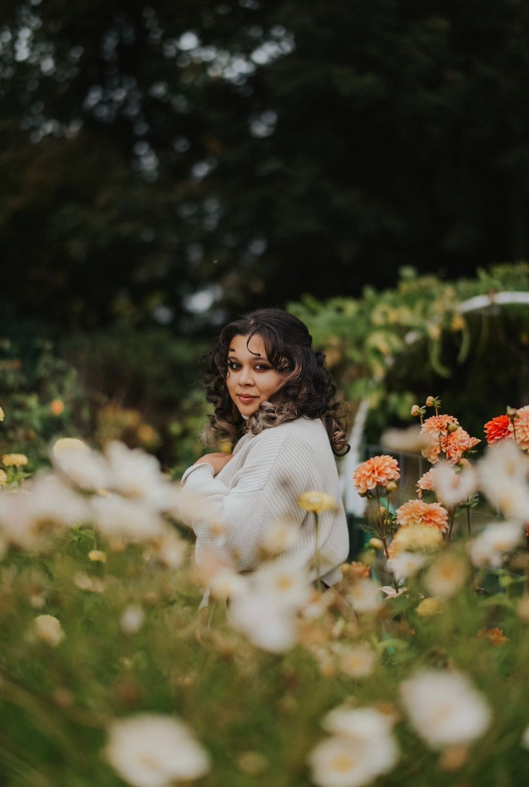

Ayezah Dar is a ‘greater-Seattle area’-based writer. They’re a graduate of the University of Iowa’s Between The Lines workshop. They’re a poet and an essayist, writing to explore, understand, and celebrate concepts like home, anger, identity, belonging, and yearning.
 Adele Donovan is a Seattle-based youth writer. She is a graduate of the University of Iowa’s Between the Lines workshop. She is the author of the chapbooks Ballads of Summer (2020) and Awaiting Great Fires (2021), and her work has appeared in Hiatus Magazine. Her work deals with themes of place, religion, spirituality, nature, and love.
Adele Donovan is a Seattle-based youth writer. She is a graduate of the University of Iowa’s Between the Lines workshop. She is the author of the chapbooks Ballads of Summer (2020) and Awaiting Great Fires (2021), and her work has appeared in Hiatus Magazine. Her work deals with themes of place, religion, spirituality, nature, and love.